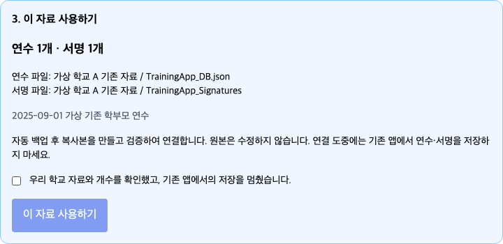

v4 자료 이전 · 핵심 세 단계
v4 자료를 처음 연결할 때만 합니다. 이미 연수·서명이 잘 보이면 건너뛰세요. 먼저 같은 Apps Script 프로젝트의 Code.gs와 Index.html을 최신 파일로 교체하고, 필요한 권한을 승인한 뒤 기존 웹앱을 새 버전으로 배포합니다. 파일 교체는 2번, 준비 실행은 3번, 배포 사진은 9번을 참고하세요. 기존 자료를 보관한 Google 계정을 사용합니다.
/exec 또는 학교 GAS를 연결한 공용 사이트에서 관리자 로그인 → 서버 연결 설정 → Google Drive 연동 → 기존 자료 연결을 엽니다. 최초 관리자 설정이 나오면 5번대로 계정을 만든 뒤 로그인하세요.
- 기존 파일 찾기를 누릅니다. Drive에 있는 기존 연수 파일과 서명 파일이 표시됩니다.
- 우리 학교 자료를 선택하고 ‘선택한 자료 확인’을 누릅니다. 폴더·연수 제목·연수 개수를 확인하세요. 별도 서명 파일이 있으면 함께 선택합니다. JSON 안에 모든 서명이 있을 때만 별도 서명 파일 없음을 고릅니다.
- 연수·서명 개수가 맞는지 확인하고 ‘이 자료 사용하기’를 누릅니다. 확인 체크를 먼저 합니다. 연결 완료 → 연수 목록 확인으로 돌아가 내용을 확인하고 새 QR·서명 링크를 배포합니다.

백업·복사·검증·연결은 프로그램이 처리하고 원본은 보존합니다. 파일 ID를 입력하거나 이전 함수를 실행할 필요가 없습니다. 같은 사람의 서명이 JSON과 시트에 함께 있으면 한 번만 계산합니다.
연결 중에는 기존 앱의 연수·서명 저장을 멈춥니다. 현재 v5 자료가 있거나 원본·연결이 바뀌면 덮어쓰지 않고 중단합니다. 파일을 못 찾거나 오류가 나면 자료를 지우지 말고 오류 문구를 담당자에게 전달하세요. 이미 연결 완료한 학교는 반복 이전하지 않습니다.